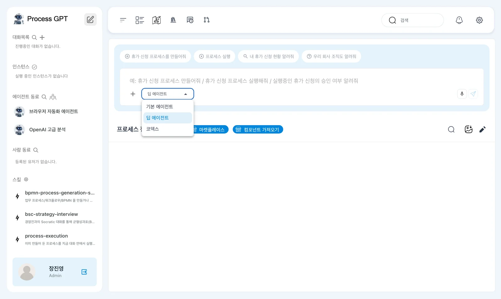
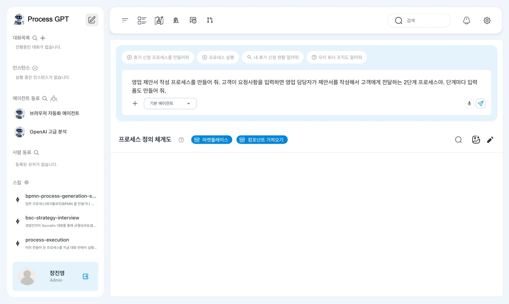
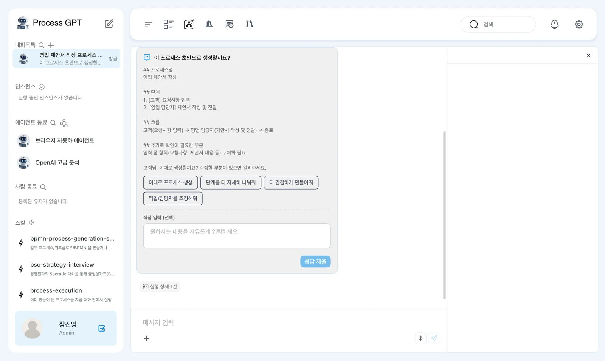
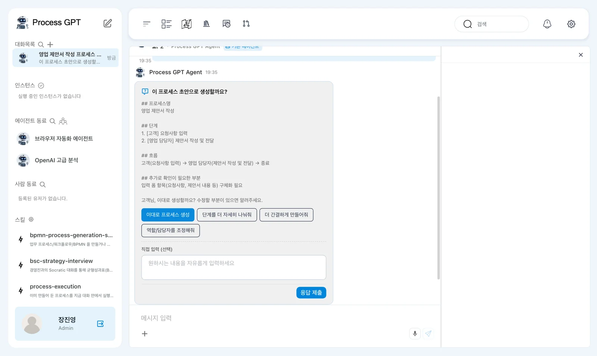
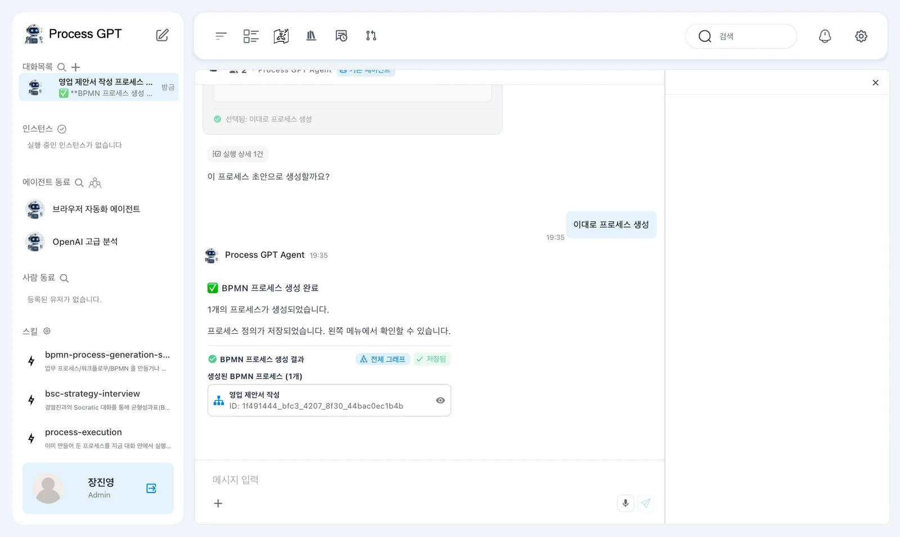
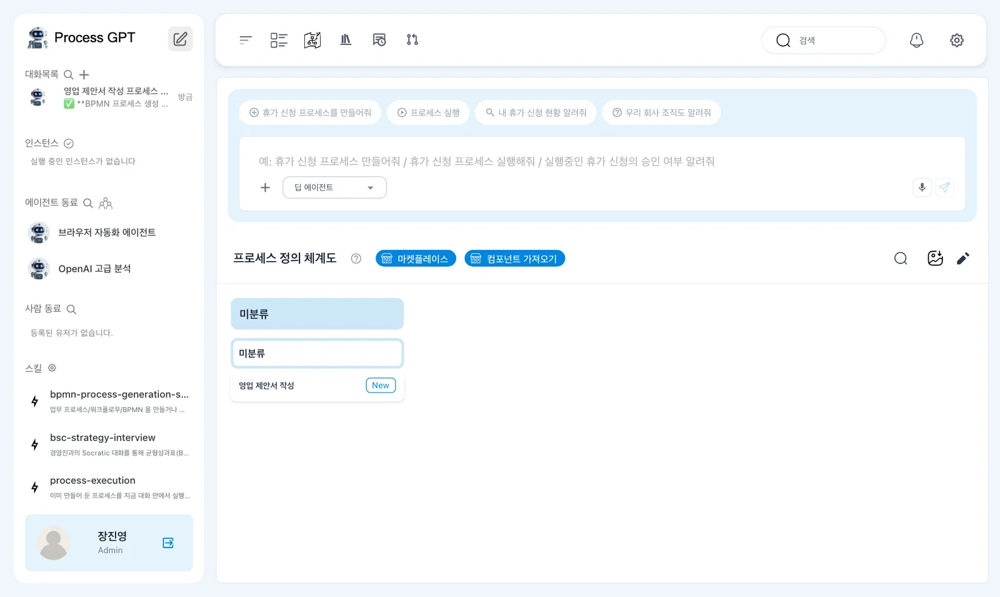
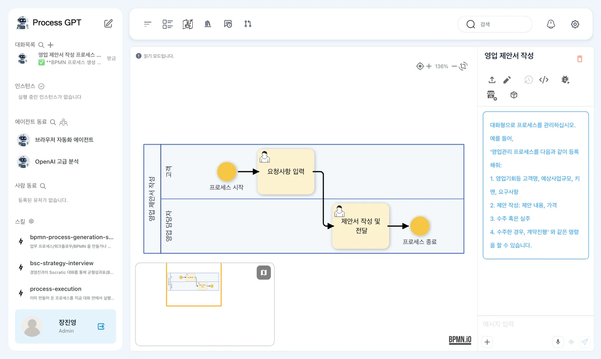

한빛오피스의 장진영 팀장이 「영업 제안서 작성」 업무를 채팅으로 설명하면, Process GPT가 단계·담당·흐름을 정리한 초안을 보여 주고 확인을 받은 뒤 BPMN 흐름도와 입력 폼이 담긴 프로세스 정의를 만들어 저장합니다.
왜 프로세스로 만드나#
한빛오피스 영업팀은 고객이 제안서를 요청하면 늘 같은 순서로 일합니다. 고객의 요청 내용을 받아 적고, 영업 담당자가 그걸 보고 제안서를 써서 보냅니다. 지금은 메일과 메신저로 주고받으니, 요청이 어디까지 처리됐는지 물어봐야 알고, 담당자가 바뀌면 받아 적은 내용이 사라지기도 합니다.
이 순서를 프로세스로 만들어 두면 이렇게 바뀝니다.
| 그때그때 | 프로세스로 |
|---|---|
| 다음에 누가 무엇을 할지 사람이 기억 | 단계와 담당이 정의에 적혀 있음 |
| 받아 적은 내용이 메일·메신저에 흩어짐 | 단계마다 정해진 입력 폼에 남음 |
| 진행 상황을 물어봐야 앎 | 한 건 한 건(인스턴스)의 진행이 화면에 보임 |
Process GPT의 프로세스는 BPMN으로 저장됩니다. BPMN은 업무 흐름을 단계·갈림길·담당 줄(레인)로 그리는 국제 표준 표기입니다. 직접 그릴 줄 몰라도 됩니다. 말로 설명하면 Process GPT가 그립니다.
따라 하기 1 — 에이전트 고르고 설명하기#
홈(사이드바 맨 위 연필 아이콘)의 채팅 상자에서 「딥 에이전트」 ▾를 눌러 「기본 에이전트」로 바꿉니다.

왜 기본 에이전트인가
「딥 에이전트」도 프로세스를 만들 수 있고, 스킬과 에이전트까지 함께 만들어 줍니다. 대신 여러 단계를 스스로 진행하느라 수 분이 걸리고, 현재 버전에서는 마지막에 「결과 전달을 보류했어요」로 끝나는 경우가 있습니다. 처음 익힐 때는 짧고 확실한 「기본 에이전트」로 만드는 것을 권합니다.
채팅 상자에 만들고 싶은 프로세스를 설명합니다. 누가 무엇을 하는지를 단계마다 말하고, 폼이 필요하다고 말합니다.
영업 제안서 작성 프로세스를 만들어 줘. 고객이 요청사항을 입력하면 영업 담당자가 제안서를 작성해서 고객에게 전달하는 2단계 프로세스야. 단계마다 입력 폼도 만들어 줘.

따라 하기 2 — 초안 확인하기#
보내면 새 대화방이 열리고, 몇 초 안에 초안이 뜹니다. 프로세스 이름, 단계와 각 단계의 담당 역할, 흐름, 더 확인이 필요한 부분이 적혀 있습니다.

확인할 것: 단계 2개와 각 단계의 담당(고객, 영업 담당자), 「고객 → 영업 담당자 → 종료」 흐름. 문장은 실행할 때마다 조금씩 다릅니다.
초안 아래에는 선택지가 있습니다.
| 선택지 | 하는 일 |
|---|---|
| 이대로 프로세스 생성 | 이 초안대로 만듭니다 |
| 단계를 더 자세히 나눠줘 · 더 간결하게 만들어줘 · 역할/담당자를 조정해줘 | 초안을 고쳐 다시 보여 줍니다 |
| 직접 입력 | 고칠 점을 직접 씁니다. 예: 고객 대신 영업 담당자가 요청을 받아 적게 해 줘 |
「이대로 프로세스 생성」을 고른 뒤 「응답 제출」을 누릅니다. 고르기만 하면 보내지지 않습니다.

따라 하기 3 — 생성 완료 확인하기#
응답을 보내면 “컨설팅 기반 프로세스 생성 워크아이템이 생성되었습니다.”가 뜨고, 실습에서는 약 15초 뒤 “✅ BPMN 프로세스 생성 완료 — 1개의 프로세스가 생성되었습니다. 프로세스 정의가 저장되었습니다.”가 왔습니다. 아래에 BPMN 프로세스 생성 결과 카드(「저장됨」, 프로세스 이름과 ID)가 있습니다. 기본 에이전트로 만든 프로세스는 따로 저장하지 않아도 저장됩니다.

홈으로 돌아가면 프로세스 정의 체계도의 「미분류」 아래에 「영업 제안서 작성」이 New 표시와 함께 생겼습니다.

이름을 누르면 정의가 열립니다. 고객 레인에 「요청사항 입력」, 영업 담당자 레인에 「제안서 작성 및 전달」이 있고, 시작에서 끝까지 화살표로 이어져 있습니다. 정의 화면은 다음 장에서 자세히 봅니다.

이 장에서 만든 프로세스#
| 단계 | 담당(레인) | 입력 폼 |
|---|---|---|
| 요청사항 입력 | 고객 | 요청사항 |
| 제안서 작성 및 전달 | 영업 담당자 | 요청사항(앞 단계 값), 제안서 |
좋은 설명의 조건
- 누가(역할)와 무엇을(산출물)을 단계마다 말하세요. “영업 담당자가 제안서를 작성해서”처럼.
- 시작과 끝을 말하세요. “고객이 요청사항을 입력하면 … 전달하는” 처럼.
- 폼이 필요하면 말하세요.
- 갈림길(승인/반려)이 있으면 말하세요. 이 장에서는 일부러 뺐습니다.
다음 장으로#
다음 장에서는 방금 만든 정의를 열어, 흐름도의 단계·레인과 각 단계의 폼을 들여다보고, 고친 내용을 버전으로 남깁니다(4장).
확인 문제
- 초안 아래의 「이대로 프로세스 생성」만 누르고 기다리면 어떻게 되나요?
- 초안을 받았는데 “고객 요청은 영업 담당자가 전화로 받아 적는다”로 바꾸고 싶습니다. 어떻게 하나요?
- 만든 프로세스는 어디서 다시 찾나요?
답
- 아무 일도 일어나지 않습니다. 선택지는 고르기만 하고, 「응답 제출」을 눌러야 Process GPT에게 전달됩니다.
- 선택지 대신 「직접 입력」 칸에 바꿀 내용을 적어 「응답 제출」하거나, 「역할/담당자를 조정해줘」를 고르고 이어지는 질문에 답합니다. Process GPT가 초안을 고쳐 다시 확인을 받습니다.
- 홈의 프로세스 정의 체계도(「미분류」 아래)나 사이드바 「프로세스」에서 찾습니다.